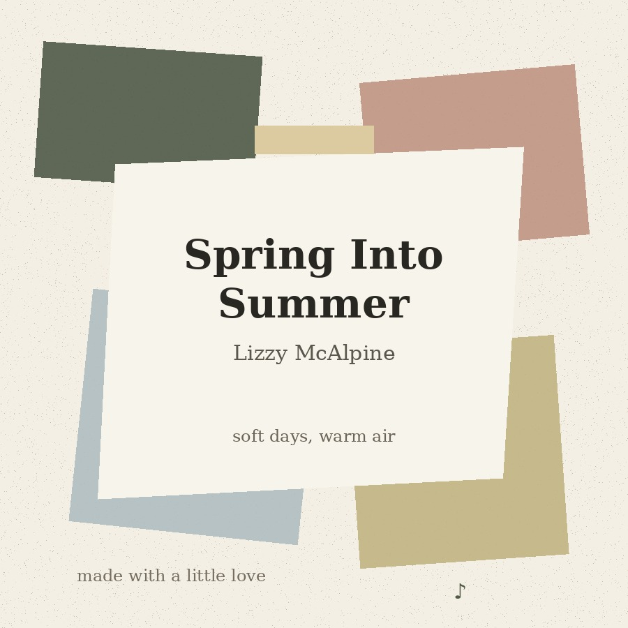
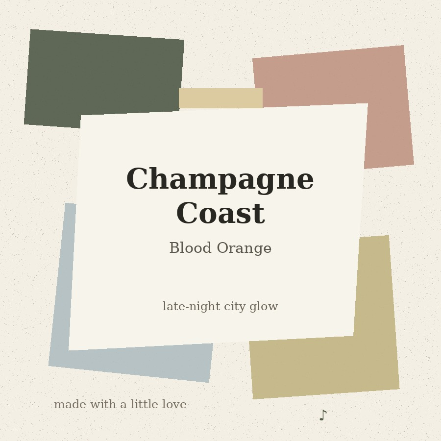
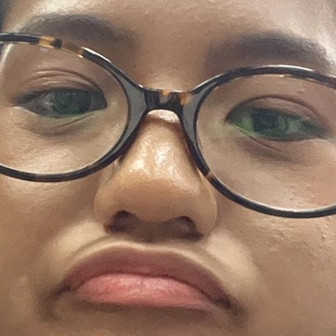

#panibagonggabipanibagonggawaniermino
#iloveyoualaiabykentbermino

SUNDAYYY NAAAAAAA I LOVEE YOUUU + + +
#panibagonggabipanibagonggawaniermino
#iloveyoualaiabykentbermino
Time of submission: 12:33A:M
Date of submission: SUN, AUG 16,2026
Reason of submission: crush kita
Hi, hello, hi, hello, hi, hello, hi ehez.
Not sure if it’s the best time to send this.
I wanted to write this but I also wanted for you to read it na
#mayhardcopynamaysoftcopypa
Okay, first of all, I genuinely don't know how this is going to turn out because apparently I decided that writing one letter wasn't enough and now I'm here writing another one that is probably going to be way too long (sinusulat ko to everytime you fall asleep HAHAHA kakatapos ko lang neto nung kahapon ehez). HAHAHA. I don't even know if you're going to read all of this in one sitting or if you're going to get halfway through and say "kent ano ba yan" and then come back to it later. Either way, if you actually read everything, thank you agad. I know this is a lot, but I think there are some things that I haven't properly said yet, and I don't want to keep trying to squeeze everything I feel into a few sentences when there is honestly so much I want to tell you.
I've been thinking a lot about everything that happened between us.
And I mean everything.
From when we were just friends and didn't really think anything of it, to all the random conversations, the stupid jokes, the little things we started noticing about each other, the times we opened up, the first time we actually talked about our feelings, the confusion, the nervousness, the teasing, the "BE CAUTIOUS" moments, the "honest honest" nonsense, the random hashtags, and somehow eventually ending up here
It's kind of funny when I think about it.
Because if someone told me before all of this that you would become someone this important to me, I probably would've laughed.
Not because I wouldn't have liked you.
But because I wouldn't have expected it.
I think that's what makes everything feel more genuine to me.
It wasn't something I planned.
It wasn't something I was looking for.
It wasn't something I woke up one day and decided I wanted.
It just happened.
And somewhere along the way, you became someone I genuinely love.
I still think about the letter you gave me.
I know I've already told you how much I appreciated it, and you've probably already heard me say it enough times, but I don't think I've ever properly explained why it affected me that much.
It was the first letter I've ever received.
Like genuinely.
My first actual letter.
And that alone already meant something to me.
But then I actually read it.
And it was from you.
So obviously, wala na.
Walang angas.
You completely ruined me HAHAHA.
I remember trying to act normal when you gave it to me, but I don't think I was succeeding very well. I read it and I couldn't stop smiling. I probably looked stupid, but honestly, I didn't care.
And the funniest part is that even after I finished reading it, I kept going back to it.
Once.
Twice.
Again.
Again.
Again.
#swearbythatdoginme
I don't even know how many times I've read it at this point.
And somehow, every time I read it, I still get that same feeling.
I still smile.
I still find myself thinking about the things you said.
And I think that's because it wasn't just a letter.
It was you taking the time to put your thoughts about me into words.
And there is something about that that I don't think I'll ever be able to fully explain.
You made me feel seen.
That's probably the simplest way I can put it.
You wrote about parts of me that I don't necessarily notice myself. You described me in ways that made me stop and think, "Ganito pala ako sa paningin niya?"
And honestly, that felt really warm.
Because sometimes we get so used to ourselves that we stop noticing the little things about who we are.
Then someone else comes along and says, "I noticed this about you."
And suddenly you realize that maybe you are seen in ways you never realized.
You did that for me.
And I think that's one of the things I admire most about you.
You're genuine.
You notice things.
You care.
You have this way of making people feel like what they're saying matters.
And yes, sometimes you care so much that you start overthinking everything and then end up saying "idk" like it's a complete explanation HAHAHA.
But even that is something I appreciate.
Because you're human.
You're not always sure.
You're not always confident.
You don't always know what to say.
And I don't think you need to pretend that you do.
I like that about you.
I like you as you are.
Not some perfect version of you.
Not some version that always knows what to do.
Just you.
The Alaia I know.
The loud Alaia.
The quiet Alaia.
The makulit Alaia.
The tampuhin Alaia.
The overthinking Alaia.
The happy Alaia.
The sad Alaia.
The nervous Alaia.
The confident Alaia.
The "I know what I'm doing" Alaia.
And the "I have absolutely no idea what I'm doing" Alaia.
I want to know all of them.
Because I don't think loving someone means only loving the parts that are easy.
And I don't mean that in some dramatic way.
I just mean that I don't expect you to always be okay around me.
If you're happy, tell me.
If you're upset, tell me if you want to.
If you're confused, you don't have to immediately figure it out.
If you're overwhelmed, you don't have to make it sound smaller just so I won't worry.
And if all you can give me is "idk"...
then okay.
We'll work with the "idk."
HAHAHA.
I think I've learned that sometimes people don't need you to solve anything.
Sometimes they just need someone who can sit there and listen.
And I want to be able to do that for you.
Not because I think I can fix every problem you have.
I can't.
I'm not going to pretend I can.
But I can listen.
I can try to understand.
I can remind you that you don't have to figure everything out at once.
And I can be there when you need someone to talk to.
That's all.
No pressure.
No expectation.
Just me being there because I care.
And that's actually connected to something you've asked me before.
Why do I like you?
Honestly, I don't know how to give you the perfect answer.
I've thought about it.
A lot.
And I could probably sit here and list a hundred things I like about you.
Your laugh.
Your voice.
Your humor.
Your stories.
Your kindness.
Your empathy.
Your pagiging makulit.
Your tampo.
Your random thoughts.
Your little reactions.
The way you talk.
The way you get excited.
The way you sometimes overthink things.
The way you can turn the most normal conversation into something completely stupid.
The way you tell me things.
The way you make me laugh.
The way you make me feel comfortable.
The way I can just talk to you.
But even if I listed every single one of those things, I don't think that would fully answer the question.
Because those are things I like about you.
They're not necessarily the reason I fell in love with you.
And I think that's an important difference.
I like you because of those little things.
But I love you because somewhere along the way, all those little things became part of a person I genuinely cared about.
You.
And that's why whenever you ask me "Why me?" I get stuck.
Because I don't have a scientific explanation.
I can't give you some equation.
I can't say:
Alaia + this specific quality + this specific moment = love.
It doesn't work like that.
I didn't choose you from a list.
I didn't look around and decide you were the most convenient person.
I didn't like you just because you were close to me.
I didn't like you because I needed someone to like.
I just got to know you.
And then I started caring.
And then I started caring more.
And then eventually, I realized that I wasn't just caring about you anymore.
I loved you.
And the weirdest thing is that I don't remember choosing that.
I don't remember having some moment where I said, "Okay, I think I'll love her now."
It just happened.
Parang second nature.
That's probably the best way I can describe it.
I don't consciously choose to care about you.
I don't wake up every morning and decide that I have to love you.
I just do.
When you're talking to me, I care.
When you're having a bad day, I care.
When you're happy, I care.
When you're nervous, I care.
When you're telling me something random that probably has absolutely no importance to anyone else, I still care because it's important to you.
And that's why taking care of you doesn't feel like a burden to me.
I remember that call.
You told me it was unfair because I kept taking care of you.
And I understood why you thought that.
Maybe from your perspective, it looked like I was constantly doing things for you and maybe you felt like you had to give something back.
But that's never how I saw it.
I wasn't keeping score.
I wasn't counting how many times I reassured you.
I wasn't thinking about how many things I'd done and wondering when you'd return the favor.
I wasn't doing any of that.
I was just taking care of someone I love.
That's it.
And I remember trying to explain that to you.
I was literally telling you that I do those things because I genuinely love you.
And then.
You fell asleep.
HAHAHAHA.
You were literally listening to me explain myself and then your body decided, "osige, tulog nako"
And suddenly, silence.
At first I thought maybe you were just quiet.
Then I realized you were actually asleep.
And I remember just staying there for a while.
I could've ended the call.
I probably should've.
But I didn't immediately want to.
I just sat there.
And honestly, I smiled.
You probably don't know that.
You probably don't even remember falling asleep.
But I remember.
And I think the reason that moment stayed with me isn't simply because it was cute.
It was because of what was happening before it.
You were worried that I was doing too much for you.
You were worried that maybe you were becoming a burden.
And meanwhile, I was sitting there trying to tell you that none of it felt like a burden to me.
I wanted to take care of you.
I wanted to listen to you.
I wanted to reassure you.
Not because I was obligated to.
Because I wanted to.
And when you fell asleep while I was still talking, there was something oddly peaceful about it.
You didn't need to keep talking.
You didn't need to explain anything.
You just fell asleep.
And I stayed.
Not because I had to.
Because I wanted to.
And I think that's a memory I'll keep.
It's not some huge dramatic moment.
It's just a little moment.
But sometimes those are the moments that matter most.
And maybe someday I'll tell you exactly how much that moment meant to me.
Or maybe I'll just keep it as one of those little memories I quietly carry around.
Either way, I don't think I'll forget it.
And then there's the song.
"Never Leave Your Side" by Saw Tooth Wave.
I don't know why that song has been stuck with me lately.
But I remember it playing when you first opened up to me.
That was one of those moments where I realized that you were trusting me with something more personal.
You were letting me see something beyond the version of you that everyone normally sees.
And I remember listening.
Really listening.
Because I wanted you to know that you didn't have to hide everything.
Then later, we started talking about our own feelings.
And that was another moment that I don't think I'll forget.
Because it was weird.
We had been friends.
We were comfortable.
We joked around.
We said stupid things.
We had our own little nonsense.
And then suddenly, we were talking about feelings that neither of us could really pretend weren't there.
It was fast.
Maybe too fast.
And I know that sometimes you still wonder about that.
Whether everything happened because of the circumstances.
Whether maybe it was just because we were close.
Whether maybe it was just timing.
And I understand why you would wonder.
I really do.
But I don't think that's what it was.
Because if it was only circumstance, I don't think I'd still feel this way when the circumstances change.
If it was only because you were close, then I don't think I'd care this deeply about knowing you beyond whatever was happening at the time.
If it was only because you happened to be there, then I don't think I would still be interested in all the little things that make you who you are.
But I am.
I want to know you.
I want to keep learning you.
And maybe that's why that song stayed with me.
Because when I think about that first night you opened up to me, I think about how I want you to know that you don't have to be alone with everything you feel.
And when I think about the idea of "never leaving your side," I don't mean it as some impossible promise that I'll always know exactly what to do.
I mean that I want to be someone who doesn't immediately disappear when things get difficult.
If you're overwhelmed, I want to listen.
If you're scared, I'll try to make things feel a little less scary.
If you're confused, I won't demand an answer from you.
If you're happy, I'll be happy with you.
If you're having a bad day, I'll still be here.
And if you need space, I'll respect that too.
Because loving someone isn't about constantly holding onto them.
Sometimes loving someone means giving them room to breathe.
Sometimes it means listening instead of talking.
Sometimes it means sitting quietly on a call while the other person falls asleep.
Sometimes it means saying, "Okay, you don't know yet. That's fine."
And sometimes it means reminding someone that they don't have to carry everything alone.
That's what I want to give you.
Not perfection.
Not some impossible promise.
Just something genuine.
Something consistent.
Something you don't have to question every five minutes.
And I know you sometimes have doubts about whether I really mean what I say.
I understand.
You don't have to believe everything immediately.
I don't want to pressure you into believing me just because I tell you that I love you.
I'd rather show you.
I'd rather let my actions speak over time.
Because anyone can say something.
Words are easy.
Consistency is harder.
So if it takes time for you to believe me, that's okay.
I won't be offended.
I won't think you're rejecting me.
I won't get angry because you need time.
I'll just keep being genuine.
Because I don't want to convince you through pressure.
I want you to eventually believe me because you've seen it yourself.
Through the way I treat you.
Through the way I listen.
Through the way I care.
Through the way I respect your boundaries.
Through the way I stay consistent even when you're unsure.
And I don't want you to ever feel like you owe me something for that.
You don't.
You don't owe me your love because I love you.
You don't owe me the same amount of effort.
You don't owe me constant attention.
You don't owe me an explanation every time you don't know what you're feeling.
You don't owe me anything.
I love you because I love you.
Not because I expect a reward.
Not because I'm keeping track.
Not because I want you to feel guilty if you can't give something back immediately.
I just love you.
And that's why it doesn't feel like a burden.
It feels natural.
It feels like something I genuinely want to give.
And I think that's what I want you to understand when you ask why I like you.
I don't think I chose you.
I think I just found myself here.
With you.
And I'm glad I did.
I also think it's funny how much you tease me about my old type.
Chinitas.
Mestizas.
HAHAHAHA.
You really will never let that go.
And honestly, I deserve it.
I said it.
You have the evidence.
But I think I've realized something.
Having a type isn't the same thing as knowing who you're actually going to love.
A "type" is just an idea.
A preference.
Something you think sounds attractive.
But then you meet an actual person.
You get to know them.
You see how they think.
You hear them laugh.
You learn their little habits.
You see how they react when they're nervous.
You see how they treat people.
You hear the things they don't usually tell everyone.
And suddenly, some imaginary list doesn't matter as much anymore.
Because there's an actual person standing in front of you.
And for me, that person was you.
I didn't look at you and think, "Well, she isn't my type, but I guess I'll like her."
No.
I just liked you.
That's what happened.
And I think that's why I can't give you some complicated reason.
Because I didn't choose you based on a checklist.
I didn't choose you because you were the closest.
I didn't choose you because I was lonely.
I didn't choose you because I needed someone.
I chose nothing.
I just felt something.
And it became stronger the more I got to know you.
That's why when you ask me "why me?" I can give you a hundred little answers but none of them will fully explain it.
I can tell you I love your laugh.
I can tell you I love your humor.
I can tell you I love your kindness.
I can tell you I love your empathy.
I can tell you I love your random stories.
I can tell you I love your tampo.
I can tell you I love your pagiging makulit.
I can tell you I love your little "idk"s.
I can tell you I love the way you make me feel comfortable.
But even after all of that, I think I'd still have to say:
I don't know.
I just love you.
And maybe that's okay.
Maybe not everything needs a perfect explanation.
Maybe some things are meaningful precisely because you can't reduce them to one reason.
And I think that's how I feel about you.
You're not a checklist.
You're not a collection of qualities.
You're not some answer I arrived at after comparing you to everyone else.
You're you.
And somehow, that's enough.
More than enough.
I think about all the little things we've already experienced together.
The stupid conversations.
The calls.
The jokes.
The random hashtags.
The "honest honest."
The "pants on water."
The "BE CAUTIOUS."
The random moments where one of us says something so stupid that the other can't stop laughing.
Those things might not seem important to anyone else.
But they are important to me.
Because they're ours.
They're little pieces of time that only make sense because we were there.
And I think that's what I want more of.
Not necessarily huge moments.
Not some dramatic movie scene.
Just more ordinary moments that somehow become special because they're with you.
More conversations where we start talking about something serious and somehow end up talking about complete nonsense.
More times where we laugh at things that aren't even funny anymore.
More times where we get annoyed at each other over something stupid and then end up laughing about it.
More times where you tell me something random.
More times where I get to hear your laugh.
More times where I get to see the different sides of you.
More moments where we just exist around each other without needing to make everything significant.
Because honestly, I think that's where some of the best memories come from.
The ordinary ones.
Like that call.
Like the night you fell asleep while I was talking.
Like the song playing when you first opened up.
Like the first time we both finally talked about our feelings.
None of those moments were planned.
And yet they're some of the moments I remember most.
That's why I don't want to rush everything.
We're still learning from each other.
We're still figuring things out.
And that's okay.
I don't need to know everything about you right now.
I want to learn it.
Slowly.
Naturally.
Through conversations.
Through experiences.
Through the random little things you tell me.
I want to know what makes you happy.
What makes you nervous.
What makes you laugh.
What makes you angry.
What makes you feel safe.
What makes you feel understood.
What makes you feel loved.
And I want you to know those things about me too.
Because I don't want this to be about me constantly telling you how much I love you while you just sit there wondering whether it's real.
I want you to actually know me too.
I want you to see the parts of me that aren't always confident.
The parts of me that overthink.
The parts of me that don't know what to say.
The parts of me that get nervous.
The parts of me that care too much.
Because if I'm asking you to let me know the real you, then I should be willing to let you know the real me too.
That's what makes this genuine to me.
And I know things aren't always going to be perfect.
We're going to misunderstand each other sometimes.
We're going to have awkward moments.
We're probably going to annoy each other.
Let's be honest, we already do.
HAHAHA.
There will probably be days where one of us doesn't know what to say.
There will probably be days where we're both tired.
There will probably be moments where we need space.
And I don't think those things automatically make something less real.
I think they're just part of getting to know another person.
What matters to me is how we handle those moments.
Whether we can communicate.
Whether we can listen.
Whether we can respect each other.
Whether we can still choose to be kind when things aren't easy.
And I want to do that with you.
Not perfectly.
Just genuinely.
Because I don't want you to ever think that loving you means I expect you to be perfect.
You don't have to be.
You can have bad days.
You can be moody.
You can overthink.
You can be unsure.
You can change your mind.
You can need time.
You can say "I don't know."
You can just be human.
And I'll still see you as you.
The same person I laughed with.
The same person who wrote me that first letter.
The same person who opened up to me.
The same person who fell asleep while I was trying to explain why I care about her.
The same person whose laugh I miss.
The same person whose tampo I somehow find endearing even when I'm the one getting suyu'd into apologizing.
HAHAHA.
The same person I love.
And if I could somehow go back to the moment before all of this started, I don't think I'd try to change anything.
Not the awkwardness.
Not the confusion.
Not the nervousness.
Not the uncertainty.
Because all of those things somehow led me here.
To you.
And I'm grateful.
I'm grateful I got to know you.
I'm grateful you trusted me.
I'm grateful you gave me that letter.
I'm grateful for every conversation.
I'm grateful for every laugh.
I'm grateful for every random thing you've told me.
I'm grateful for every time you let me help.
I'm grateful for every time you've opened up.
I'm grateful for every time you've made me laugh.
I'm grateful for every little moment that probably didn't seem important at the time.
And I'm especially grateful for the fact that I get to keep learning who you are.
Because I don't think I'm done admiring you.
I think there's still so much more of you for me to know.
And I want to know it.
I want to know the person you become when you're excited about something.
I want to know the person you become when you're comfortable.
I want to know the things you care about deeply.
I want to know your stupid little habits.
I want to know your favorite random things.
I want to hear stories I've probably already heard but somehow still enjoy because they're from you.
I want to know what you think about things.
I want to know what makes you feel proud.
I want to know what makes you nervous.
I want to know what you dream about.
I want to know what kind of person you want to become.
And I want you to know that you don't have to rush any of that.
We have time to learn.
And maybe that's what I want most.
Time.
Not because I'm trying to predict the future.
Not because I want to force anything.
Just because I want more moments with you.
More calls.
More conversations.
More laughter.
More stories.
More "idk."
More "honest honest."
More "BE CAUTIOUS."
More nonsense.
More everything.
And maybe that's why I keep thinking about that song.
"Never Leave Your Side."
Because lately, whenever it comes to mind, I think about you.
And I think about how much I want you to know that my care for you isn't something temporary that exists only because everything happens to be convenient right now.
It's something I genuinely feel.
I don't know exactly what the future will look like.
I can't promise that I'll always know what to say.
I can't promise that everything will always be easy.
I can't promise that I'll never make mistakes.
But I can promise that what I feel right now is genuine.
And I can promise that I will always try to treat you with the care and respect you deserve.
I want to be consistent.
Not because I'm trying to convince you.
But because I want to be.
I want my actions to eventually make you feel more certain than any words I could write.
Because words are nice.
Letters are nice.
But consistency is what makes them real.
And I think that's what I want to give you.
Not some grand performance.
Not some huge gesture every day.
Just consistency.
The kind where you don't have to wonder if I suddenly stopped caring because I had a bad day.
The kind where you don't have to feel like you need to earn my care.
The kind where you can trust that I mean what I say.
And if it takes you time to believe that, then okay.
Take your time.
I don't want to rush you.
I don't want you to feel pressured.
I just want you to eventually see that I'm being honest.
And if you ask me again why I love you...
Maybe I'll still struggle.
Maybe I'll still say "I don't know."
Maybe I'll still annoy you with the same answer.
But I'll probably add everything I've written here.
I'll tell you about your laugh.
Your tampo.
Your kindness.
Your humor.
Your empathy.
Your random stories.
Your little habits.
Your weirdness.
Your sincerity.
The way you make me laugh.
The way you make me care.
The way you make me want to listen.
The way you make me want to stay.
And then I'll probably still end with:
I don't know.
I just love you.
Because that's the truth.
And maybe I don't need anything more complicated than that.
I love you because I love you.
I love you because I genuinely feel it.
I love you because caring about you doesn't feel like work.
I love you because taking care of you doesn't feel like a burden.
I love you because being there for you is something I naturally want to do.
I love you because you're you.
And maybe if you ever ask me to quantify it...
I'll just say:
I love you 4000.
HAHAHAHA.
Okay, that's probably cheesy.
But I'm keeping it.
Because honestly, if there were a number big enough to explain how much I care about you, I'd probably still find a way to say it's not enough.
So I'll just say 4000.
And then I'll probably add another zero when you're not looking.
But jokes aside, I hope you know that I don't say "I love you" just because it sounds nice.
I don't say it because I think it's what you're supposed to hear.
I say it because it's genuinely what I feel.
And I don't want you to ever feel like those words come with some hidden obligation.
They don't.
They're just words that describe something I already feel.
And if you don't know what to say back sometimes, that's okay.
If you don't know how to respond, that's okay.
If you just laugh because you're embarrassed, that's also okay.
I'll probably laugh too.
Because that's us.
We don't always know how to handle serious things without making them a little stupid.
And honestly, I like that.
I like that we can have a serious conversation and then somehow end up laughing about something completely unrelated.
I like that we can talk about feelings and then five minutes later be talking about some random nonsense.
I like that we don't have to be serious all the time.
I like that there's comfort in the chaos.
And I like that somehow, even when things are confusing, I still feel like talking to you is something I look forward to.
That's special to me.
You are special to me.
And I don't think I want to take that for granted.
So if you ever wonder whether the letter you gave me mattered...
It did.
If you ever wonder whether I remember that night you opened up...
I do.
If you ever wonder whether I remember the song...
I do.
If you ever wonder whether I remember you falling asleep while I was talking...
I definitely do.
HAHAHAHA.
And if you ever wonder why I take care of you...
Now you know.
Not because I have to.
Because I want to.
Not because I expect something.
Because I care.
Not because you're a burden.
Because loving you feels natural.
Not because you're some perfect version of what I thought I wanted.
Because you're you.
And that's enough.
More than enough.
I think that's what I want this letter to leave you with.
Not some perfect explanation.
Not some grand promise.
Just the truth.
I love you.
I genuinely love you.
I love you when you're laughing.
I love you when you're being makulit.
I love you when you're tampuhin.
I love you when you're overthinking.
I love you when you're confident.
I love you when you're unsure.
I love you when you know what you're doing.
I love you when you say "idk."
I love you when you're happy.
I love you when you're tired.
I love you when you're talking nonstop.
I love you when you're quiet.
I love you when you're being completely random.
I love you when you're simply being yourself.
And I don't need you to become someone else for me to keep feeling that way.
I just want to keep knowing you.
Keep understanding you.
Keep laughing with you.
Keep having stupid conversations with you.
Keep making memories with you.
Keep listening to you.
Keep caring about you.
Keep being someone you can talk to.
And maybe, somewhere along the way, we'll look back at all of this and laugh about how complicated everything felt in the beginning.
Maybe we'll laugh at how nervous we were.
Maybe we'll laugh at all the awkwardness.
Maybe we'll laugh at the "BE CAUTIOUS" jokes.
Maybe we'll laugh at how much we overthought everything.
Maybe we'll laugh at how you kept asking me why I liked you and I kept saying I didn't know.
But even if I never find a more perfect explanation, I think I'll be okay with that.
Because I don't think love needs to be perfectly explained to be genuine.
Sometimes you just meet someone.
You get to know them.
You laugh with them.
You listen to them.
You care about them.
And somewhere along the way, they become important to you.
That's what happened to me.
I met you.
I got to know you.
And somewhere along the way...
you became someone I love.
That's it.
That's my answer.
Maybe it's simple.
Maybe it's not enough.
But it's mine.
And it's honest.
So thank you, Alaia.
For the letter.
For trusting me.
For opening up.
For laughing with me.
For letting me care.
For every random conversation.
For every stupid joke.
For every tampo.
For every "idk."
For every reassurance.
For every little moment.
For being someone I can be myself around.
And for giving me someone worth writing 4000+ words about because apparently I have lost all sense of brevity.
HAHAHAHA.
But seriously.
Thank you for being you.
And if you ever wonder whether I regret falling for you...
No.
Not even close.
If anything, I'm grateful.
Because out of all the random things that could have happened, somehow I got to know you.
And somehow, I got to love you.
And I think that's something I'll always be thankful for.
So yeah.
Hi, hello, hi.
This is probably way too long.
You probably already got tired somewhere around the middle.
But if you somehow made it here...
I hope you know that every word was meant.
Every stupid joke.
Every serious part.
Every memory.
Every little thing I mentioned.
All of it.
And if there's one sentence I want you to remember after reading all of this, it's probably this:
I didn't choose to love you. I just found myself loving you, and I'm really glad I did.
And maybe another one:
You don't have to believe every word immediately. I'll let my actions speak for me.
And okay, fine.
One last one.
I love you 4000.
There.
Now you can't say I didn't give you a definite answer.
HAHAHAHA.
— dear, charo kent
#kentbermino #ermino #kennotthepepper #peppernakennot #totoy #frenchgirlissigningout #oanotata #oanomisskita